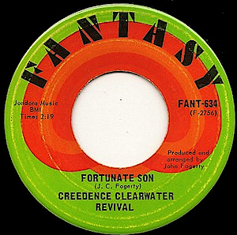

Day 3

Creedence Clearwater Rivival - Fortunate Son 网易云
一首标志性的60年代摇滚，每次听到我都会想到阿甘正传……
An iconic 60's hard rock. The song remembers me of Forrest Gump every time I hear it…
引用Wikipedia对作者John Fogerty的引用：
Quote Wikipedia's quote of the author John Fogerty:
It's the old saying about rich men making war and poor men having to fight them.
The thoughts behind this song - it was a lot of anger. So it was the Vietnam War going on… Now I was drafted and they're making me fight, and no one has actually defined why. So this was all boiling inside of me and I sat down on the edge of my bed and out came "It ain't me, it ain't me, I ain't no senator's son!" You know, it took about 20 minutes to write the song.
Some folks are born made to wave the flag Ooh, they're red, white and blue And when the band plays "Hail to the chief" Ooh, they point the cannon at you, Lord It ain't me, it ain't me, I ain't no senator's son, son It ain't me, it ain't me, I ain't no fortunate one, no Some folks are born silver spoon in hand Lord, don't they help themselves, oh But when the taxman comes to the door Lord, the house looks like a rummage sale, yes It ain't me, it ain't me, I ain't no millionaire's son, no It ain't me, it ain't me, I ain't no fortunate one, no Some folks inherit star spangled eyes Ooh, they send you down to war, Lord And when you ask them, "How much should we give?" Ooh, they only answer "More! More! More!" y'all It ain't me, it ain't me, I ain't no military son, son It ain't me, it ain't me, I ain't no fortunate one, one It ain't me, it ain't me, I ain't no fortunate one, no no no It ain't me, it ain't me, I ain't no fortunate son, no no no